Journey 07 · Romania Note 4 of 7 Field Note
The View From Seat 41
By the time I sat down in Seat 41 on the train back to Timișoara, I had already missed one bus, overpaid for a taxi, accidentally taken a city bus to Cluj full of retirees and intermittent air conditioning, and spent an unexpected night in the bougiest hotel of my Romania experience.
The train, of course, was late.
But at least this one had air conditioning.
The whole thing started because I was trying very hard to be responsible.
I woke up early at my hotel in Turda because my bus left at 8:15, and I had absolutely no intention of missing it. I packed carefully, checking every outlet for forgotten chargers and adapters, ensuring I packed my leftovers from dinner so I would have something to eat on the ride. I even skipped breakfast because I did not want to lose track of time and end up rushing.
I asked the hotel to call me a taxi to the bus station. There was some confusion about where exactly I meant. Turda is small, and the bus station is less “station” and more “collection of bus stops surrounding a building with limited signage.” But eventually we sorted it out.
I also specifically requested a taxi that accepted cards to avoid having to make extra stops to find an ATM. The driver confirmed before I got in, and we set off to the bus station right on time.
The taxi ride confirmed something I had suspected when I arrived a few days before: I had walked across basically the entire town of Turda.
The difference was that walking had taken me through little alleys, over tiny bridges crossing creeks, and along quiet residential streets. The taxi, unable to take pedestrian shortcuts, had to navigate the long version, creeping up and down town in an elaborate zigzag.
Turda surprised me. For such a small place, it has beautiful homes. Some grand, some worn, some clearly abandoned but still elegant. The whole town felt unexpectedly lovely from the back seat of a taxi.
Then we got to the bus stop. Which is when things stopped going according to plan.
The taxi driver did not take cards. I had specifically asked for a taxi that accepted cards. He did not accept cards, he needed 14 lei, or roughly $3.10 USD.
We went back and forth for a bit. I found 12 lei ($2.66). More searching produced 10 euro ($11.62). He took the combination with the resigned practicality that becomes familiar when traveling, and I decided that the 400% tip he was granting himself was not worth the potential of a missed bus.
At this point, I was still doing fine, 20 full minutes ahead of schedule.
The FlixBus had dropped me off at this exact location two days earlier, so I sat down at the stop where I had arrived, feeling very confident in my logic.
The bus station in Turda has three main sections. From where I sat, I could see the central area clearly. Surely, if the bus did not arrive exactly where I expected, I would see it as it pulled to the larger section in front of the station.
I waited.
And waited.
The app said the bus was on time. A regular city bus pulled in front of me, and departed shortly after. I continued to wait. Eventually I got nervous and checked the front platforms. Nothing. The app still said on time, and it was exactly on time.
I decided it was time to ask the information desk inside.
“Oh,” the woman said, pointing toward the one section of the station I could not see from where I had been sitting. “the FlixBus goes there.”
No problem, I thought. Of course it went to the platform I couldn’t see that was not the one the bus used on arrival. It’s fine. Two minutes past departure time, but the FlixBus is never on time anyway.
The station was empty. The app now informed me that my perfectly on-time bus was already on its way to the next stop.
There is only one bus a day between Turda and Timișoara.
Excellent.
At this point, I had choices. Most of them were bad.
I could wait all day for a late-night bus to Bucharest and arrive at some unreasonable hour after an eight-hour ride. I could try to brute force a complicated travel route across Romania via several towns I had never heard of and could not find on my map. Or I could get myself to Cluj and regroup.
I headed back inside to information, letting them know I missed my bus so now I was trying to get to Cluj. The woman at the station pointed outside and said, essentially, “That one.”
The driver was already preparing to leave.
I waved him down, sweating and carrying entirely too much stuff, trying to explain that I needed to get to Cluj and could only pay by card. He was not thrilled about the card situation.
But after opening a compartment beneath the bus to store my small suitcase next to the spare tire, he retrieved a payment system from what appeared to be an emergency storage box. After several minutes of unboxing, reading instructions and connecting it to his phone all to charge me a total of less than $5 USD, he let me aboard.
The bus was nearly packed. The average age on this bus appeared to be somewhere between seventy and Methuselah. I found a seat near the front, squeezing into the too small space and immediately began sweating.
The bus was retro, with carpeted everything. Thick velvet curtains rubbed smooth on the creases over the years, carpet with a riot of colors on a dark background faded with age. The warmth inside was oppressive. It was like sitting in a sauna with the population of the local shuffleboard team, all of whom seemed to feel like sweaters and jackets were a necessity despite the heat both inside and out.
I tried to convince myself that this was just the traveling version of the spa I had been so excited about over the weekend, just a slightly overcrowded sauna. Every eleven or twelve minutes, the air conditioning came on for exactly one glorious minute before shutting back off again. I began living for that minute, watching the clock at the front of the bus to countdown to when I could feel the cool kisses of relief.
Outside the window, we made our way back through Turda. We passed my hotel, and I gave it a wave. We wound our way through the countryside and into the mountains. We stopped a few times in what felt like empty spaces where nothing but sheep and ravens would live, picking up a handful of passengers at each.
Then Cluj arrived, and with it, a new problem: I had absolutely no idea where I was supposed to get off. Cluj, it turns out, is huge.
The bus kept stopping, people kept leaving, and I kept trying to figure out exactly where we were. The majority of Methuselah’s classmates all got off at the same spot, leaving the bus largely empty and with much better airflow.
Eventually, I decided one particular stop looked wrong enough that I probably should not get off there. But the driver stepped outside for a quick cigarette and I panicked and got off too, only to realize he was absolutely not done driving.
Back on the bus.
What I did not want to do was accidentally stay on this bus and end up well past Cluj in a different small town with limited cell service or wifi options. So at this point, I pulled out Google Translate and explained my situation to a kind older woman sitting near me.
She read my message, and talked to the driver.
There was a lot of Romanian I could not understand, but I caught enough words to gather we were discussing stations, trains, airports, possibilities.
Eventually, she turned to me and said: “Stay.”
The driver looked at me in the mirror, pointed to himself, pointed to me, and gave me a thumbs up.
I took this to mean: I got you.
And he did.
He drove me all the way to the main bus station in Cluj, helped me with my bag, then walked me inside the bus station, and did what can only be described as a human handoff to the information desk because he was still deeply unconvinced I would survive on my own.
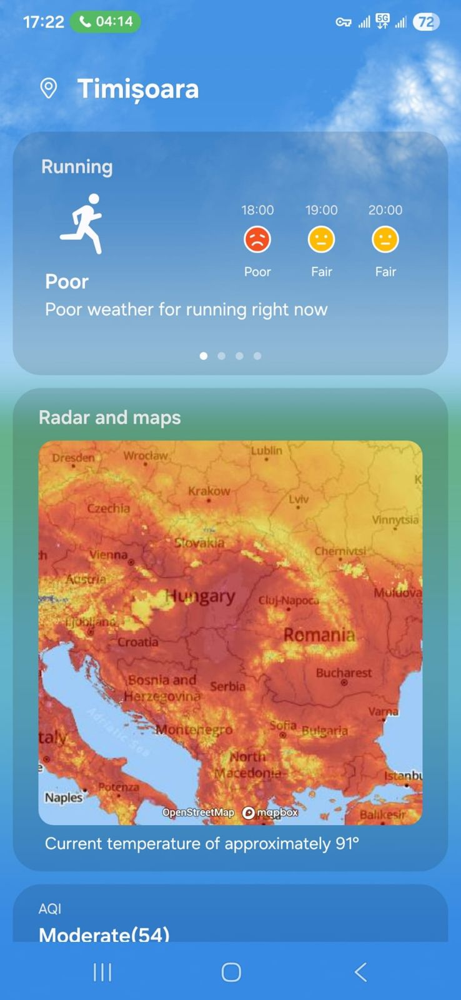
Honestly, fair. At this point I had essentially made it clear that I had already missed one bus, I apparently kept trying to wander off the current bus without my luggage only to get back on, and I clearly had no plan since I could not answer simple questions like “how are you getting to Timisoara?”
By this point, it was hot. Really hot. A heat dome from Africa had made its way to Romania, and it was somewhere north of 40°C in the city. The travel options were confusing. Half of Romania seemed to be temporarily buses instead of trains because of rail upgrades. Every website showed a slightly different version of reality.
At one point, I found a thirty-dollar flight home that would have sent me from Romania to Munich to Rome and then back to Timișoara twenty-three hours later.
No.
I needed a hotel.
I would figure out tomorrow, tomorrow.
So I booked a hotel with a spa, almost accidentally booked it for the following week, caught myself at the last second, and got in a taxi.
I told the driver I planned to get a hotel and visit a museum until I could officially check in. The taxi driver told me museums were closed on Monday and recommended the botanical garden instead because of the heat. It was probably only a 25-minute walk from my hotel, he assured me.
Oh no… I won’t be falling for that trick again. At least not this week.
Fortunately, the hotel let me check in absurdly early after hearing my increasingly ridiculous story.
Within an hour, I was in a swimsuit.
And somehow, the day changed shape.
Not because the original plan worked out. It did not. I was supposed to be on my way back to Timișoara, I had tickets to an event I was looking forward to a great deal. Instead, I was in Cluj with no plan beyond “cool down and stop making decisions.”
So I stopped trying to fix the day into what it had been supposed to be.
I swam. Sat on a lounge chair overlooking the city, ice cold lemonade in hand. I drank caramel cappuccinos. Ate slowly at the hotel restaurant, completely unbothered. Figured out a train for the following afternoon. Got back in the pool. I let the day become something else because it had already refused to become what I planned.
By the time I finally boarded the train the following afternoon, I had accepted that internal Romanian travel is just hard sometimes.
But Seat 41 came with air conditioning. And eventually electricity started to work. And there was a window.
Outside, Romania moved by in long green stretches. Hills. Villages. Fields. Flocks of sheep.
And shepherds. Real shepherds.
The kind I had only ever seen in illustrations or old photographs, walking slowly with their flocks through the countryside.
Somewhere between the missed bus, the traveling sauna full of great-grandparents, and the unexpected hotel detour, I realized the trip had become about something else.
The plan had failed. The view had not.
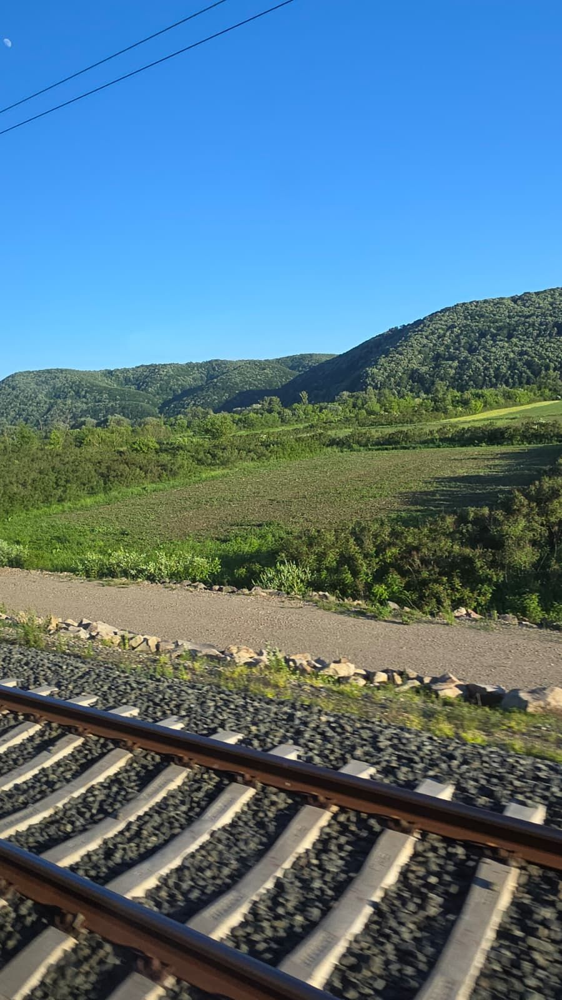
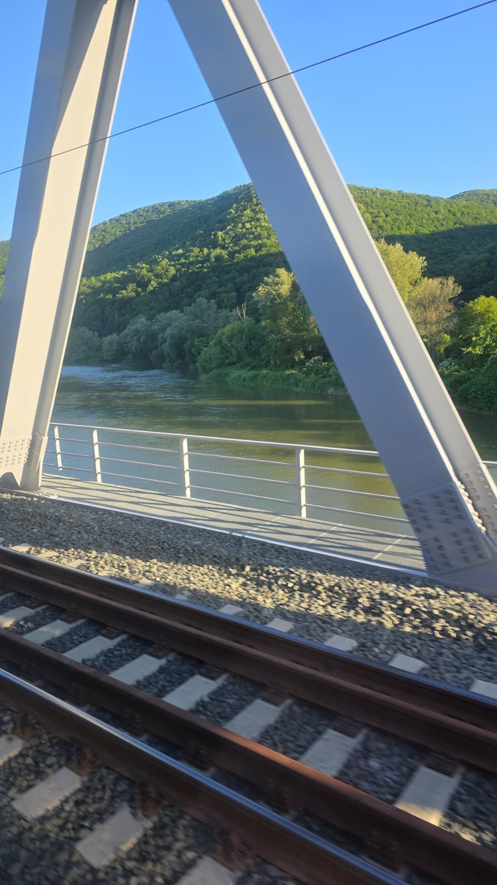
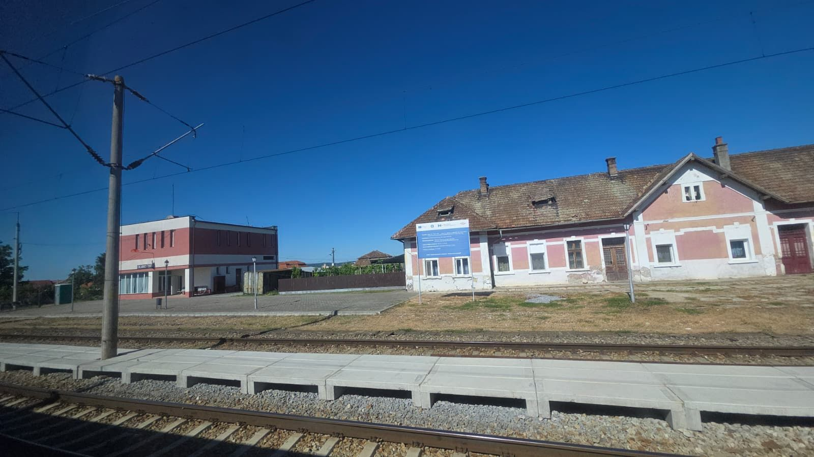
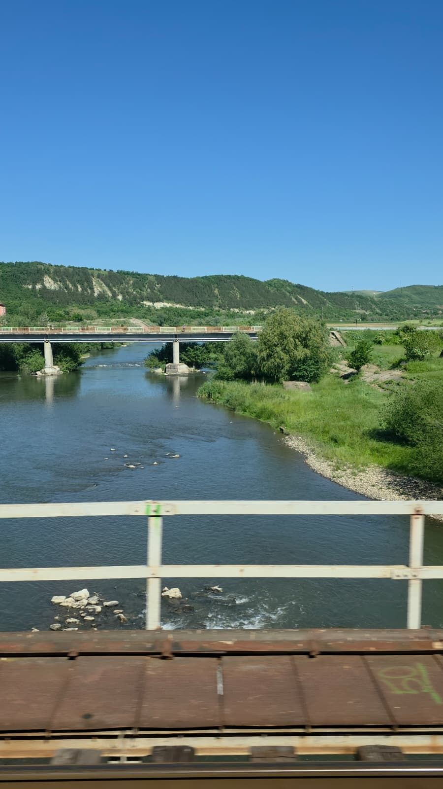
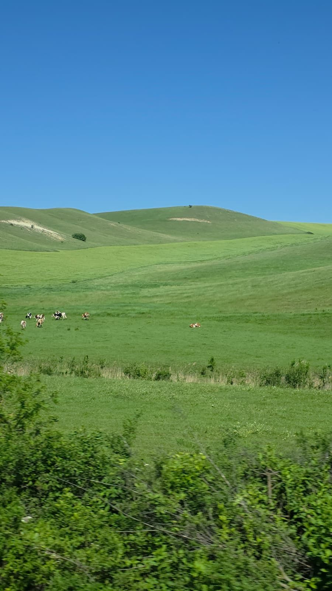
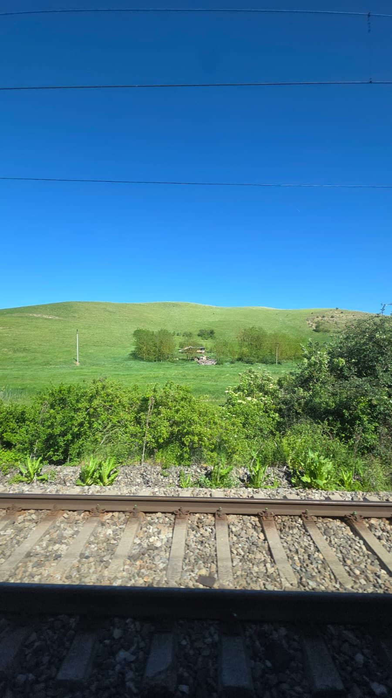
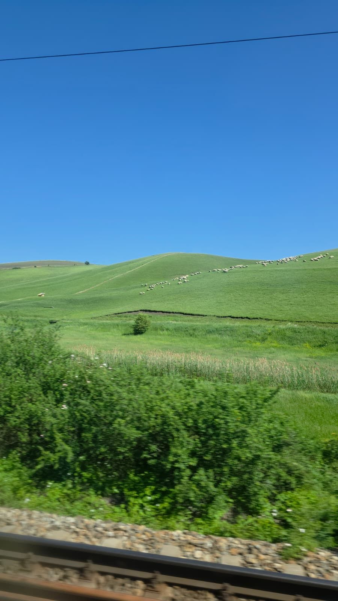
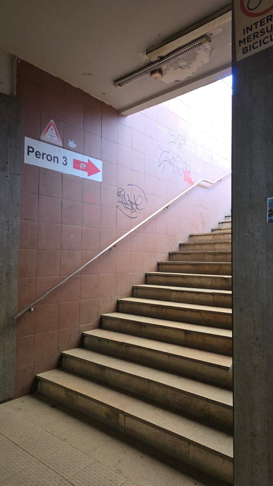
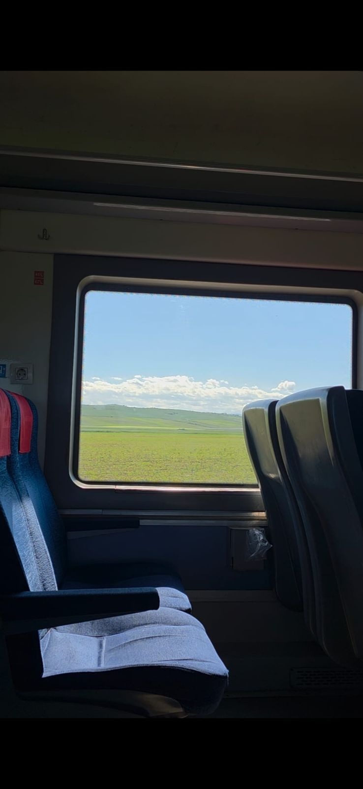
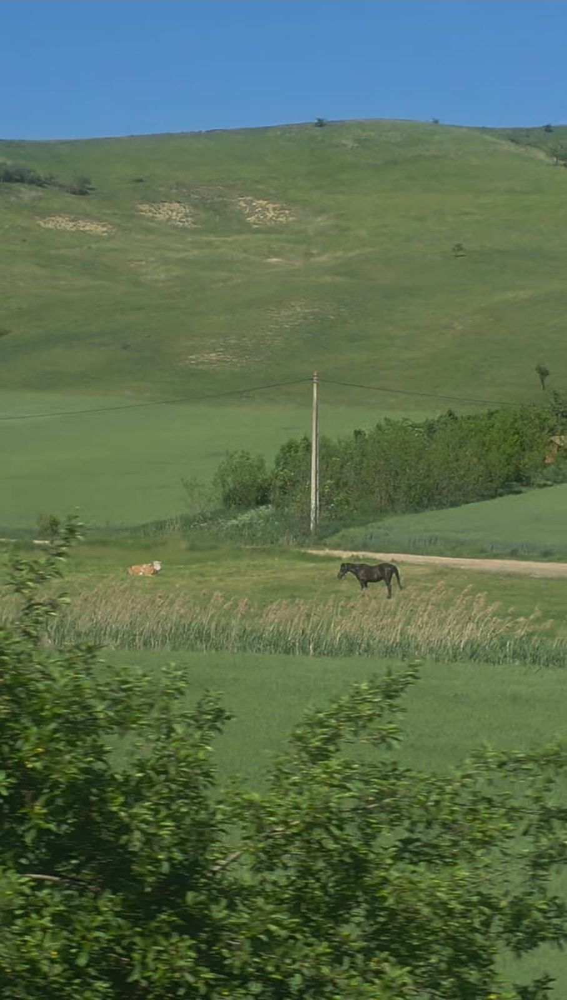
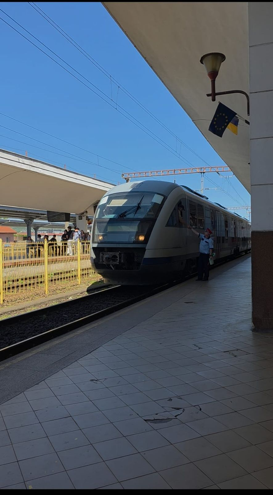
Originally published at fieldnotesfromabroad.com/2026/05/27/the-view-from-seat-41/